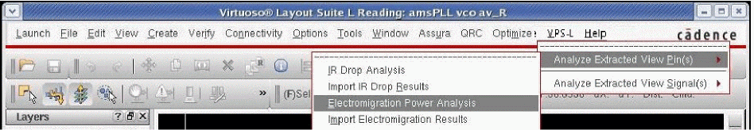

6
EM Analysis
Overview
Electromigration (EM) is used as a general term to describe failure mechanisms in the metal wires of a computer chip caused by the movement of metal atoms in a wire because of high current stress. As electrons move through a metal wire, they collide with the atoms in that wire. These collisions cause wires to become heated, and if enough electrons collide with a metal atom over a period of time, the metal atom can move in the direction of the electron flow, causing the following failure mechanisms:
- First, if enough atoms move, the wire breaks and becomes an open circuit.
- Second, if enough atoms move to the same location, a short to an adjacent metal wire is created. This phenomenon is commonly known as fusing.
Either of these mechanisms changes the functionality of the chip.
EM analysis is performed to analyze the power grid and signals of the design for any current density violations of the DC current through the metal conductor lines, vias, and contacts. These violations can then be corrected by limiting the current density in metal conductor lines, vias, and contacts.
EM Analysis of the Power Grid
Before running Electromigration Analysis, the EM reliability rules need to be specified.
These rules are read either from the QRC technology file (qrcTechFile) or from the emDatafile, which includes user-specified rules. For more information, see “Reading EM Rules from qrcTechFile” and “Reading EM Rules from emDataFile” sections in the “
By default, in Power IR/EM, the extraction, simulation, and EM analysis flows are run at the same temperature, which is called the nominal temperature. However, you can choose to perform simulation at non-nominal temperatures using TC1 and TC2. You can also perform IR/EM analysis without creating multiple emDataFiles for different temperature ranges.
This is possible because even while performing extraction at nominal temperature, you can store the TC1 and TC2 (non-nominal temperature) values. The simulation and analysis flows then modify the resistance values internally as per the temperature values specified by you. So, when you perform EM analysis, the software reads in the data and calculates the new resistance using the temperature values specified by you and uses this resistance value for EM analysis.
This means that you only need to maintain one emDataFile corresponding to nominal temperature and you can use the same file for all temperature ranges.
To store TC1 and TC2 parameters in the extracted view, select Parasitic Resistance Temperature Coefficient in the Netlisting tab of the Quantus (Pegasus) Parasitic Extraction Run form while generating the extracted view.
For details, see the QRC Extraction Users Manual.
To perform EM analysis of the power grid from the Virtuoso layout window, follow these steps:
- In the Main menu, choose VPS-L. Two options, Analyze Extracted View Pin(s) and Analyze Extracted View Signal(s), appear in the drop-down list.
- Choose Analyze Extracted View Pin(s) for analyzing the power pins of the design and Analyze Extracted View Signal(s) to analyze the signals of the design.
-
The procedure below is detailed for EM power-grid analysis. Choose Analyze Extracted View Pin(s) - Electromigration Power Analysis from the drop-down list. This is shown below.
Figure 6-1 Opening Electromigration Power Grid Analysis Form -
The Electromigration Power Grid Analysis form opens. This form is shown below.For information about performing EM analysis on signal nets, see EM Analysis of Signal Nets.Figure 6-2 Running Electromigration Power Grid Analysis
vsaEMLast.cfg file that is created for every session by default. However, if you do not want the software to load the settings of the previous session by default, then set the -vsaDisableLastConfig environment variable to true.-
In the QRC extracted cellview, you can view the Extracted Library, Extracted Cell, and Extracted View name created during the extraction run. See Running Pegasus Quantus QRC in the “IR/EM Analysis Flow” chapter. The default view name for an extracted view is
av_extracted. - Alternatively, you can select Use RCXspiceINIT for layer info so that Power IR/EM can read the RCXspiceINIT file instead of the extracted view.
-
Click All pins to perform EM analysis on all pins. Click Select pins to select the pin names on which the EM analysis should be performed. You can also search for pin names by typing the name in the search field. The search field also accepts SKILL regular expressions.When you open the Electromigration Power Grid analysis form, all pins listed in the list box are selected by default. This is shown in the image below.Figure 6-3 Selecting Pins from the Extracted Cellview
-
In the Extraction group box:
-
Specify the directory name in the QRC Results Directory where the RCXspiceINIT file exists. Select the signal names on which the EM analysis is to be performed.
-
Click Select QRC Directory to open the Select QRC Directory form. This form is shown below.
Figure 6-4 Select QRC Directory
- Specify the name of the QRC run in the QRC Runname cyclic field. See Running Pegasus/PVS Quantus QRC in the “IR/EM Analysis Flow” chapter.
-
Click Edit/View Custom Parameters to specify custom parameters during the run time and set their values in the
emDataFile. The Electromigration Edit/View Custom Parameters form opens. This form is shown below.
Figure 6-5 Opening the Electromigration Edit/View Custom Parameters Form -
This form lists parameter names and their values. You can change the value of a parameter in the text field provided at the bottom of the form and click Update.
-
The
BulkTerminalparameter is only applicable to the design resistor flow. This parameter is used to specify the bulk terminals of the design resistors that are to be ignored while performing EM analysis. You can provide the names of multiple terminals separated by a comma. You can also specify the terminals by using the _vsaBulkTerminal environmental variable. When this environment variable is specified, the value of theBulkTerminalparameter in the GUI is updated. -
The
EnableDesignResAnalysisparameter is used to enable or disable the analysis of all design resistors. It is set totrueby default. Set tonilto disable analysis of all design resistors. -
JmaxLifeis used to specify the scaling factor that applies to the current density limits for different lifetimes. You can also specify the lifetime value using the environment variable, _vsaJmaxLife. -
The
RMSMultiplierPinandRMSMultiplierSignalparameters are used to specify the RMS relaxation factor for EM power-grid and signal analysis respectively. You can also set the _vsaRMSMultiplierPintrue. -
SimTemperatureparameter is used to specify the simulation temperature to be used for EM analysis. When this temperature value is specified, it overrides the temperature value specified in the simulation directory. -
The
applyRThresholdparameter is used to specify the threshold ratio “r” for AC-Peak analysis. You can also specify the ratio using the _vsaApplyRThreshold -
deltaTis used to specify the maximum rise in temperature in degree Celsius, caused due to Joule Heating. For details, see deltaT it in the EM Rules Specification chapter.
-
The
- Click OK. EM analysis will be performed using the new values.
For details, see Rules for Defining Limit-Based Parameters in the “EM Rules Specification” chapter. -
Specify the directory name in the QRC Results Directory where the RCXspiceINIT file exists. Select the signal names on which the EM analysis is to be performed.
-
In the EM Rules group box:
- Click Power Rail Rules to enable power-grid analysis.
-
Click qrcTechfile to specify
qrcTechFileflow. When you click qrcTechfile, Technology file and Name Mapping File cyclic fields appear in the form. Select the relevant technology file and name mapping file to be used for EM analysis. For details of the layermap file used for EM analysis, see Layermap File for EM Analysis. -
You can also click Select qrcTechFile to specify the relevant
qrcTechFile. The Select Existing Technology File form opens.
Figure 6-6 Selecting the Existing Technology FileIn this form, select the file and click OK. -
Click Select mapFile to select the relevant layermap file. The Select Existing Name Mapping File form opens. The form is shown below.
Figure 6-7 Selecting an Existing MapfileIn this form, select the file and click OK. -
Click emDataFile to specify the
emDataFileflow. When you click emDataFile, the EM Data File cyclic field appears in the form. From the cyclic field, specify an existingemDataFile– available from previous runs – for performing EM analysis.
When you select theemDataFileflow, a pop-up window with the duplicate via width information warning message appears. This is shown below.
Figure 6-8 Duplicate Via Width Information WarningIn the above pop-up window, click OK to use the via width information from theemDataFile. Click Cancel to use the via width values fromqrcTechFile. To suppress this warning message, set the _vsaMinWarning environment variable totrue. In this case, OK will be considered as default, which means that the via width information specified in theemDataFilewill override that specified inqrcTechFile. -
You can also click Select emDatafile to specify an existing
emDataFile. The Select Existing EM Data File form opens. This form is shown below.
Figure 6-9 Selecting an Existing EM Data File - In this form, select the file and click OK.
-
In the Simulation group box:
- Specify the Simulation Directory to point to the results of the Spectre, UltraSim, or APS simulation that was performed on the extracted view.
-
You can also click Select Simulation Directory to open the Select Simulation Directory form. This form is shown below.
Figure 6-10 Selecting the Simulation DirectoryIn this form, select the simulation directory and click OK.
For more information, see Running a Spectre Simulation, Running An UltraSim Simulation, or Running an APS Simulation in the “IR/EM Analysis Flow” chapter. -
In the Analyze results cyclic field, you can specify the following:
Figure 6-11 Specifying the Type of Analysis- Select DCOP or DC operating point analysis, which is recommended for large analog designs that are difficult to simulate in Spectre using transient analysis, especially when all parasitics are included in the analysis.
-
Select TRANSIENT analysis, which automatically sets the simulation time in seconds when the from/to fields are selected. You can select a subset of this value for transient analysis by changing the value in the from/to fields.
If the simulation data is in thevavo.dbformat, you cannot change the value in the from/to fields. This is because all currents are pre-processed and stored by the simulator before Power IR/EM is run. To change these values, change theemirstart/emirstopoptions in the simulator tran statement. For more information, see Running an APS Simulation in the “IR/EM Analysis Flow” chapter. -
If your simulation data is in
vavo.dbformat, the vavo_db option appears in the form. This option is selected by default. To use the PSF database, deselect this option. This option is available only if you are usingvavo.db. You can also specify this option in the batch mode by using the _vsa_vavo_db_enable.
-
In the Analysis group box, specify the method for processing results. The available options are detailed below.
Figure 6-12 Specifying the Electromigration Power Grid Analysis Options
Layermap File for EM Analysis
The layermap file or the mapping file specified for EM analysis, provides the mapping between the ICT file layer names, the extraction layer names and the DFII layer names. A sample layermap file is provided below.
#ictName #extractionName #dfIIName
mt1 mt1 Metal1
mt2 mt2 Metal2
Via1 Via1 Via1
Via2 Via2 Via2
You can also provide the device resistor information in the layermap file. In this case, the “#extractionName” column will have the device resistor information in the following format:
DEVICE_RES:<cellName of the device resistor>:<resistor propertyName>:<width property name>:<length property Name>:<width unit>:<length unit>
It is important that all properties are specified in the order, from left to right, shown in the above format. This means, to specify a property listed on the right, you must first specify the properties listed on the left. For example, to specify the width property name, you must specify the resistor property name and to specify the length property name, you must specify both the width property name and the resistor property name. For example:
mt1 DEVICE_RES:nplusres:r:wSim:lSim Metal1
nplusres is the device resistor cell name
r is the resistor property name
wSim is the width property name
lSim is the length property name
Analyzing EM Across Design Resistors
Power IR/EM supports EM analysis of design resistors. This is done by specifying information in the emDataFile.
You can use the DesignResistors parameter to provide the list of cell names. For each cell name, you can specify the resistance property name, width property name, length property name, and units of width and length property names of the design resistors for which you want EM to be analyzed.
The width and length property names are specified when the names of these properties are different from the “w” and “l” in the extracted view.
After specifying the above, append the details for current density specifications for the above design resistors in the emDataFile in the following manner.
xrefLayers = (
( "CellName" ("emruleName" "DFIILayer"))
)
xrefLayers = (
( “nplusres” (“emrule_nplus” “diff”))
)
Add the rule for the design resistors in the current density rules specification section.
avgPositiveCurrentDensSpecList = (
(nil layer “emrule_nplus" minW 0.0 maxW -1.0 currentDensity ((1.6, 20) (1.61,110) (1.62,125)) )
There can be some resistors in the design that do not belong to any of the pins selected for analysis. By default, all the design resistors are analyzed irrespective of the pins selected for analysis. To analyze only those design resistors that are connected to selected pins, set the _vsaDisableAllDesignResistorAnalysis environment variable to true.
To disable analysis of all design resistors, set the EnableDesignResAnalysis parameter in the Electromigration Edit/View Custom Parameters form to nil. This parameter is set to true by default.
For details of the syntax and examples of the parameters to be added to the emDataFile, see
PSF/PSF-XL flow, the design resistor analysis is currently only supported for the emDataFile flow and not for qrcTechFile flow.Writing Out an EM Command File
To generate a batch mode command file, follow these steps:
- In the Electromigration Power Grid Analysis form, specify the QRC Results Directory and the pin name.
-
Click Generate Command File. The Save Selected EM Commands To a File form opens. This form is shown below.
Figure 6-13 Save Selected EM Commands To a File -
In this form, specify the Command File Name. If the command file name is not specified, the software either uses
<Batch job Name>.cmdas the default command file name or if the batch job name is not provided, then it usesvsaEMBatch.cmdas the default command file name. - Specify the Batch Job Name, which is a unique job name to distinguish between different jobs. This allows you to run multiple command files – generated by different job names – in the same working directory.
- In the Run Options group box, click Run file to run the generated command file in the background.
-
Specify the Local Server Farm or the LSF Command String , which is the name of the wrapper string command that will launch Power IR/EM in the batch mode. For example, you can specify
bsub -q lnx64as the LSF command string. You can also specify the LSF string by using the environment variable, _vsaLSFMachineString. When this environment variable is set, the LSF Command String field is pre-filled with the specified command. - Click Load GIF Viewer to launch the vsaPlot, which is used for visualizing and customizing the IR drop and EM analysis results. For details, see the “Visualizing Results in vsaPlot” chapter.
-
Click View file to view the command file. This option is selected by default. If you do not want to view the command file, you can change the default selection of this option by setting the _vsaUncheckViewFile
true. - Click OK.
Opening Power IR/EM Directly from Extracted View
The procedure for opening Power IR/EM directly from extracted view for EM analysis is the same as described for IR Drop analysis. For detailed information, see the same section in the “IR Drop Analysis” chapter.
EM Analysis of Signal Nets
EM analysis of signal nets is similar to the EM analysis of power nets.
To perform EM analysis on signal nets, follow these steps:
-
Choose VPS-L – Electromigration Signal Analysis from the menu bar in the extracted view. This is shown below.
Figure 6-14 Opening Electromigration Signal Analysis Form -
The Electromigration Signal Analysis form opens. This is shown below.
Figure 6-15 Running Electromigration Signal Analysis - Click All signals to perform EM analysis on all signals.This is the default option. This does not include the power or ground nets that must be analyzed as part of the Electromigration Power Analysis. See EM Analysis of the Power Grid.
-
Click Select signals to specify signals on which EM analysis will be performed. Search for signal names by typing the signal name in the search field. The search field also accepts SKILL regular expressions.
-
When you click Select signals, a list box is enabled that shows all the signal names, the Show Signal net(s) option, and the Select Signal nets(s) option.
- Select the nets in the list box and click Show Signal net(s) to view the selected signals highlighted in the extracted view.
-
ClickSelect Signal net(s) to select signals from the extracted view. Click Select Signal Net(s) and then select the signals in the extracted view. The selected signals are highlighted. After selecting the signals, press the
Esckey. The selected nets are highlighted in the list box.
EM analysis will be performed for only those presistors that are on the selected signal nets.
- The remaining fields to be filled out in the Electromigration Signal Analysis form are the same as those explained in EM Analysis of the Power Grid.
EM Analysis Results
After completing EM analysis for pins or signals, the results can either be imported from the EM analysis performed earlier or they can be displayed by selecting options in the Electromigration Analysis Results form. Both methods are detailed below.
Importing Results of a Previous EM Analysis
To import the results of an EM analysis performed earlier, perform the following steps:
-
Choose Analyze Extracted View Pin(s) or Analyze Extracted View Signal(s) – Import Electromigration Results.
Figure 6-16 Opening Import Electromigration Results Form -
The Select Existing Results File form opens.
Figure 6-17 Importing Existing Electromigration Results - In the above form, click Load Only Failed Results to view EM results for only failed resistors.
-
Select the file from the list and click OK. The Electromigration Analysis Results form opens.
Figure 6-18 Opening Electromigration Analysis Results Form when EM Analysis Results are ImportedWhen existing results for EM analysis are imported, the Electromigration Analysis Results form provides a Save Marking button instead of Save Results to A File button. This is shown in the above form.-
Click Save Marking to save the marked results in a file for future reference. The Save Marking Data form opens. The results can be reloaded in subsequent sessions. This is shown below.
Figure 6-19 Saving the Marking Data
-
Click Save Marking to save the marked results in a file for future reference. The Save Marking Data form opens. The results can be reloaded in subsequent sessions. This is shown below.
Viewing Electromigration Analysis Results for the Current Run
The EM analysis results for the current run can be viewed using the various options provided in the Electromigration Analysis Results form.
After running EM analysis for either pins or signals, when you click OK on the Electromigration Power Grid Analysis or Electromigration Signal Analysis form, the Electromigration Analysis Results form opens. This form is shown below.
Figure 6-20 Opening Electromigration Analysis Results Form for the Current EM Analysis Run
In this form, specify the following:
- In this form, select the pin or signal for which you want to view the results, from the Select Pin/Signal cyclic field. You can search for pin or signal names by typing the name in the search field and pressing enter, the button with the green arrow. The search field also accepts SKILL regular expressions.
-
Click Show passed results to view the presistors that passed the current density limits. This field is enabled by default when the Electromigration Analysis Results form is opened after completing the Electromigration Power Grid Analysis or Electromigration Signal Analysis form and clicking OK.
When you deselect this option, the Select Pin/Signal cyclic field is updated to list only those pins and signals that have failed the current density limits. This is useful in reducing the debugging time when there are many pins or signals but only few have failed the current density limits. Instead of viewing all nets, both passed and failed, you can deselect this option to view only the failed nets and proceed with debugging. - In Layout Window, specify the window ID for the layout, if a layout is open for the design. Click Get Layout Window Number to let the software get the layout window number automatically from an already open window. If no layout window is open, a new window will be created with a layout view and that one will be used.
- Click Connect to Gif Viewer to open the vsaplot window.
- From the Type Of Results cyclic field, select Average, RMS, PEAK, or AC-Peak values of the current from the Spectre simulation. This field shows options based on the options selected for transient analysis in the Electromigration Signal Analysis or Electromigration Power Grid Analysis form.
- The Simulated Temp field displays the simulation temperature in degree Celsius. In the above form, the simulated temperature is 27.0 degree celsius.
- Click Mark and Unmark for marking and unmarking presistors. Select the presistors and click Mark. A # symbol gets added at the beginning of the row in which the EM analysis result of the presistor is displayed. The result file displays the EM analysis results for all marked presistors. Similarly, click Unmark to unmark a presistor. Presistors showing false errors can be unmarked so that they are not reported in the result file. This helps save time spent viewing and debugging all the false errors reported in the result file.
-
A text box in the form provides information about the presistors on which the EM analysis is being performed. There are several columns in the text field. The% Failed column indicates whether a presistor passed or failed the current density limit (EM failure). The measured width is the width of the polygon, and the minimum width is the width that is required to avoid an EM failure.
- Click Toggle Visibility for Hilights to toggle the highlights of the selected presistors on and off.
-
Click Select to select a presistor of interest and highlight it. When a presistor is selected, all previous presistor highlights are removed and only the current selection is highlighted. The presistor is highlighted in white and blinks. However, you can set your color preference for highlighting a presistor. For this, use the _vsaDrfFile
vavo8highlight layer in thevavo.drffile.
Figure 6-21 Selecting a Presistor and Highlighting it on the Layout -
Click Select and Zoom to select a presistor of interest and zoom in on it.
Figure 6-22 Selecting and Zooming into a Presistor on the LayoutIn the extracted view, when a selected net is zoomed into, the layout editor also zooms to the same location. Any layout editing to correct EM violations has to be done in the layout view, after which the design needs to be re-extracted to verify the corrections.
-
Click Display Netnames to display the net names for the selected parasitic resistors. For this, first click Display Netnames, then select the presistors and click Select or Select and Zoom. The PARASITIC RESISTOR NETNAMES form opens to list all the net names connected to the selected parasitic resistors. This form lists the presistor instance names and their corresponding net names.This is shown below.
Figure 6-23 PARASITIC RESISTOR NETNAMES Form -
Click Display Times to find out when the current density violation occurs. This option is available only when the Type of Results selected is Peak. For this, first click Display Times, then select the presistors and click Select or Select and Zoom.
Figure 6-24 Displaying Times for Selected PresistorsIn the above form, the Display Times field is checked and the presistors are selected. When you click Select or Select to Zoom, the TRANSIENT TIME FOR PEAK VOLTAGE DROP form opens. The form displays the transient times when the maximum current passes through each selected parasitic resistor. This form is shown below.
Figure 6-25 Opening the TRANSIENT TIME FOR PEAK VOLTAGE DROP Form - Click Select presistors Inside A Window to highlight a region of the design and select the parasitic resistors in that region. The corresponding lines are highlighted in the Electromigration Analysis Results form. This option allows you to locate all presistors within a region.
-
Click Plot waveforms to display the current waveform on the selected presistor in the Virtuoso (R) Visualization & Analysis XL window. This is shown in the figure below.
Figure 6-26 Displaying Current Waveforms for Selected Presistors in the Virtuoso (R) Visualization & Analysis XL -
Click View PDK Current Density Limits to view the current density numbers from the
emDataFile, as shown in the example below.
-
Click Save Results To A File to save the EM analysis results. The Save Electromigration Analysis to A File form opens. This is shown below. In this form, you can click Save Only Failed Results to save EM analysis results of only the failed nets.
Figure 6-27 Saving Electromigration Analysis to A FileIn this form:- Specify the Output File Name in which you want to save the results.
- Click Save Only Failed Results option to save EM analysis results of only the failed nets.
-
Click View file to view the result file. This option is selected by default. If you do not want to view the result file, you can change the default selection of this option by setting the _vsaUncheckViewFile
true.
Customizing Error Layer Display for EM Analysis Results
In addition to viewing results as described above, Power IR/EM provides the option to customize EM analysis result displays.
Click Plots in the Electromigration Analysis Results form. The Plots form opens. In this form, you can customize the EM violation ranges using a continuous RGB gradient. The vast range of color options provided by the RGB gradient makes it easier to view a specific range of violations.
-
For details of all the available options that you can set in the Plots form, see the section titled, Customizing Error Layer Display for IR Drop Results, in the “IR Drop Analysis” chapter.
Figure 6-28 Displaying Highlight Color Spectrum and Options for Customizing Display of EM Plots -
In this form, the following options are provided for the types of plots that can be displayed:
- Current: displays the current violations for all or selected layers
- Current Density: displays the current density violations for all or selected layers
-
Current Density Ratio: displays the current density ratio violations for all or selected layers When you update the layers for which you want to view plots in the Select Layers cyclic field, the layers listed in the text box in the Electromigration Analysis Results form are updated to display information for only those layers that are selected in this form.Figure 6-29 Layer Selection in Plots Form Updated in Results FormFor detailed descriptions of all the other fields and options available in the Plots form shown above, see the section titled, Customizing Error Layer Display for IR Drop Results, in the “IR Drop Analysis” chapter.
- The last state for All Layers is saved for each plot type and switching back to the previous plot type when All Layers is selected will restore the last state.
Customizing the EM Analysis Results Display
The information displayed in the list box of the Electromigration Analysis Results form can be customized to meet your specific needs, or display the information most important to you. In the form, click Customized results display. The Customize display of EM results form opens. This form is shown below.
Figure 6-30 Customize display of EM results Form
This form lets you customize the information displayed in the Electromigration Analysis Results form. Any number of columns can be displayed in the result form.
- Select the items in the Columns field and select the right arrow to add the items in the Selected columns field. Use the left arrow to remove items from the Selected columns list.
- Click Restore Default to restore the default selected columns information in the form.
-
Click Save Selection to save your customized selected columns, configuration to a file to be used later. The Save EM Result Column View To A File form opens.
Figure 6-31 Saving the Customized Selection - In this form, specify the Output File Name and click OK.
-
Click Load Selection to select a configuration file with the selected columns information saved earlier. The Select Existing Em Column View Select File form opens.
Figure 6-32 Selecting Existing EM Column View Select File -
-
In this form, select the file and click OK.The results of adding x and y coordinates can be viewed in the figure below. The x and y coordinates are always saved in the EM results file.Figure 6-33 Customized EM Results Displaying x and y CoordinatesBy default, for displaying column information in the Electromigration Analysis Results form, the software searches for the column configuration file at the following locations, in the order in which they are listed below:
-
The configuration file specified using the _vsaEMColumnViewConfigFile
-
The
emColumnView.cfgfile in the current working directory -
The
emColumnView.cfgfile in SKILL paths
If the file is not available in any of the above three locations, the software uses the configuration from the previous customized display. -
The configuration file specified using the _vsaEMColumnViewConfigFile
Using EM Analysis Results for Cross-Probing in Power IR/EM
The node 1 and node 2 columns in the EM Analysis Results screen represent the actual nodes of the parasitic resistor. These are used for Power IR/EM cross -probing wherein Power IR/EM displays the location of the parasitic resistor as a white line in the extracted view. This is shown below.
Figure 6-34 Virtuoso Layout Suite - Displaying the Location of the Presistor

Return to top